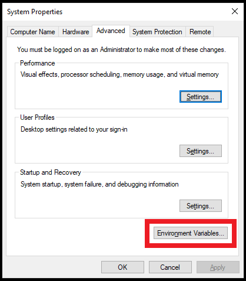

Open ‘Advanced system settings‘
click on the ‘Environment Variables…‘

Click on ‘New…‘ to add the ‘Path’ variable (
note that if your ‘Path’ variable already exists, then click on ‘Edit…’ instead
):
You should see the New User Variable box: